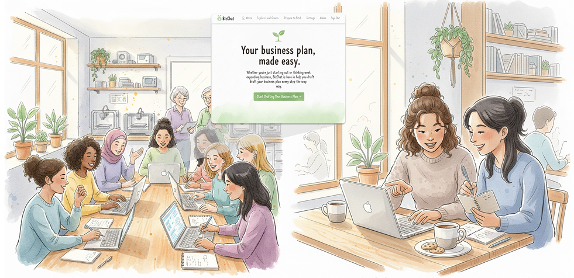
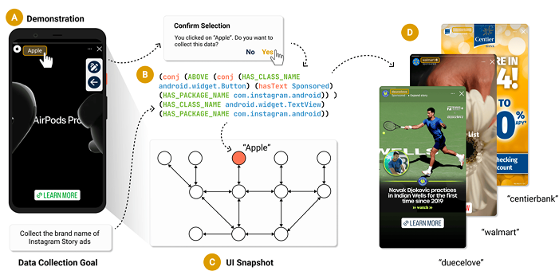

Qi Zhao
I am a first-year PhD student in Human-Centered Computing at University of Maryland, Baltimore County, advised by Dr. Yasmine Kotturi. Previously, I received my Master in Human-Computer Interaction from Indiana University Indianapolis, and my Bachelor in Computer Science and Technology from Hangzhou Dianzi University.
My research interests include Future of Work, Community-based Research, Human-centered AI, and Accessibility. Currently, I am working on BizChat, an AI-powered business plan writing tool.
qiz1@umbc.edu CV Scholar LinkedIn GitHub
Selected Projects and Publications
-

-

"I don't feel lonely because I don't work alone most of the time": Exploring Gig Work as an Opportunity for Social Participation Among Older Adults
CHI Poster 2026
-

Writing
-
CHI 2026 Reflection
Read on Medium
News
-
Feb 2026
Poster "I don't feel lonely because I don't work alone most of the time" accepted to CHI 2026.
-
Jan 2026
Paper Crepe: A Mobile Screen Data Collector Using Graph Query accepted to CHI 2026 with an Honourable Mention Award.
-
Aug 2025
Started PhD in Human-Centered Computing at University of Maryland, Baltimore County.